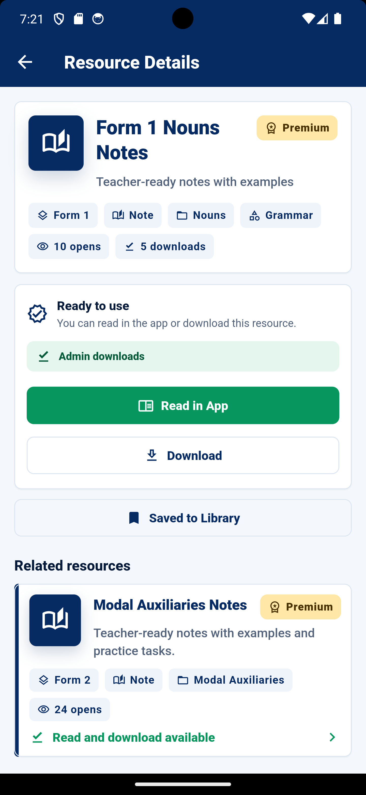

App Screenshots
Below are sample screenshots showing the design and functionality of EngRes. Replace the image files with your actual screenshots in the images folder.




A teacher-focused English resource application designed to support the teaching of English in Senior School through organized notes, lesson support materials, revision resources, assessment tools, and premium teaching content.
Contact DeveloperEngRes is an educational technology project created to support teachers of English in Senior School. The application provides organized teaching resources that help teachers prepare lessons, access revision materials, design exercises, and support learners more effectively.
The platform is designed with teachers as the primary users. It focuses on making English teaching preparation easier, faster, and more organized by bringing useful teaching resources into one accessible mobile platform.
While learners may also benefit from the resources, EngRes is mainly built for teachers who need reliable and well-structured English teaching materials for Senior School.
The goal of EngRes is to simplify English lesson preparation and provide teachers with convenient access to quality digital teaching resources.
Organized English notes and reference materials to support lesson preparation and classroom delivery in Senior School.
Resources that help teachers prepare class activities, explanations, examples, lesson content, and learner support materials.
Revision materials that teachers can use to guide learners, assign practice, and support exam preparation.
Materials that assist teachers in preparing quizzes, exercises, revision tasks, tests, and learner practice activities.
Resources organized around the teaching of English at Senior School level, with focus on classroom usefulness and teacher convenience.
A mobile-first platform that allows teachers to access useful English teaching resources conveniently from their devices.
Below are sample screenshots showing the design and functionality of EngRes. Replace the image files with your actual screenshots in the images folder.

EngRes is operated as a software development and educational technology project by Simon Njoroge. The project focuses on creating digital tools that support the teaching of English in Senior School.
Educational technology, mobile application development, teacher resource development, digital learning resources, and software-based educational services.
Teachers of English in Senior School who need organized, accessible, and practical resources for lesson preparation and learner support.
Learners, tutors, schools, tuition centres, and independent users may also benefit from the educational resources available on the platform.
Free access to selected resources, with paid access to premium teaching materials, advanced revision resources, and additional educational tools.
Developer: Simon Njoroge
Email: siremon.njoro@gmail.com
Project: EngRes Senior School English Teacher Resource Application